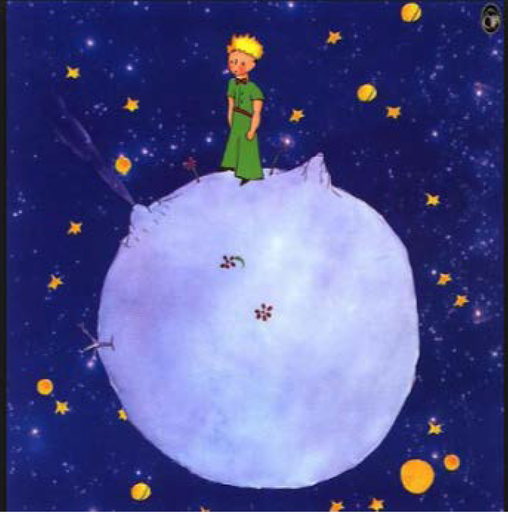
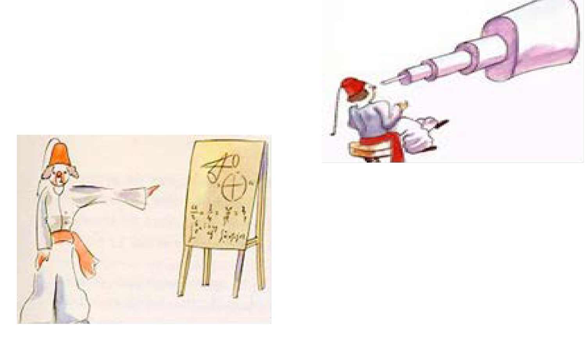
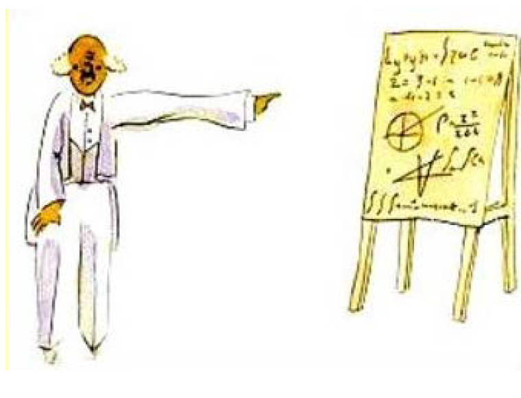

Capítulo 4
De esta manera supe otra cosa importante: su planeta era apenas más grande que una casa.
Descripción de la imagen: El Principito, vestido en un traje verde de mangas cortas y un moño rojo, se encuentra de pie en un pequeño mundo purpura. De fondo sólo se pueden ver las estrellas y el cielo del universo oscurecido.
Esto no me sorprendió mucho pues sabía muy bien que además de los grandes planetas como la Tierra, Júpiter, Marte, Venus, a los cuales se les ha puesto nombre, existen otros muchos, centenares de ellos, tan, tan pequeños, que a algunos es difícil distinguirlos aun con la ayuda de los telescopios. Cuando un astrónomo descubre uno de ellos, le da por nombre un número. Le llama, por ejemplo, "Asteroide 3251".
Tengo suficientes razones para creer que el planeta del principito era el asteroide B 612 el cual, por medio del telescopio, sólo ha sido visto una vez, por un astrónomo turco en 1909.
Descripción de la imagen: Se visualizan dos dibujos distintos. El que se encuentra arriba a la derecha contiene a un astrónomo turco, vestido en sus típicas ropas culturales, sentado frente a un enorme telescopio. En la segunda foto, abajo a la izquierda, podemos observar al mismo astrónomo explicando, frente a un público que no vemos, la existencia del asteroíde con ayuda de una pizarra. Se encuentra vestido con típicas ropas turcas.
Este astrónomo, aunque demostró su descubrimiento en un Congreso Internacional de Astronomía, nadie le creyó por su extraña manera de vestir ¡Las personas mayores son así!
Felizmente para la reputación del asteroide B 612, un dictador turco obligó a su pueblo vestir a la usanza europea.
Entonces, en 1920, ante otro congreso, el astrónomo volvió a dar la noticia de su descubrimiento y como lucía un traje muy elegante, todo el mundo aceptó su demostración.
Descripción de la imagen: Se puede observar al mismo astrónomo, frente al mismo público y con la misma pose anterior, pero esta vez está vestido de traje.
Si les he contado estos detalles sobre el asteroide B 612 y hasta les he confiado su número, es por consideración a las personas mayores. A los mayores les gustan mucho las cifras. Cuando se les habla de un nuevo amigo, jamás preguntan cosas esenciales como: "¿Qué tono tiene su voz? ¿Qué juegos prefiere? o ¿Si le gusta o no coleccionar mariposas?" En cambio preguntan: "¿Qué edad tiene? ¿Cuántos hermanos? ¿Cuánto pesa? ¿Cuánto gana su padre?" Solamente con estos detalles creen conocerle. Si a una persona mayor le decimos: "Hay una casa preciosa de ladrillos rosas, con geranios en las ventanas y palomas sobre el tejado", no pueden imaginarse cómo es. Es preciso decir: "Hay una casa que vale tantos millones de pesos". Entonces exclaman entusiasmados: "¡Oh, qué hermosa es!"
Si les decimos: "La prueba de que el principito ha existido es que reía, era encantador y quería un cordero”. No lo entienden ni lo creen, aunque “querer un cordero” sea una prueba irrebatible de existencia; las personas mayores se encogerán de hombros y nos dirán que nos comportamos como niños. Pero si les decimos: "el planeta de donde venía el principito es el asteroide B-612", quedarán totalmente convencidas y no dudarán más ¡ni modo!, hay que entender que son así. Los niños deben ser muy condescendientes con las personas mayores.
Claro que nosotros, como sabemos comprender la vida, nos burlamos tranquilamente de los números. A mí me habría gustado empezar esta historia a la manera de los cuentos de hadas. Me habría gustado decir:"Érase una vez un principito que vivía en un planeta apenas más grande que él y que tenía necesidad de un amigo…" Para aquellos que comprenden la vida, esto hubiera parecido más real. No me gustaría que mi libro fuese tomado a la ligera.
Siento tristeza al acordarme de mi amigo. Hace ya seis años que él se fue con su cordero y si intento describirlo aquí es sólo con el fin de recordarlo bien. Tener un amigo es un verdadero privilegio y si uno se olvida de ellos se corre el riesgo de volverse como las personas mayores que sólo se interesan por las cifras y los números. Para evitar esto, he comprado una caja de lápices de colores.
¡Es muy duro, a mi edad, ponerse a dibujar, cuando en toda la vida no se ha hecho más que boas abiertas y boas cerradas a la edad de seis años! Trataré de hacer retratos lo más parecido que me sea posible, aunque no estoy muy seguro de lograrlo. Uno saldrá bien y otro quizá no tanto. En las proporciones me equivoco también un poco; aquí, el principito es demasiado alto y allá es muy pequeño. Dudo sobre los colores de su traje. Titubeo sobre algo y a veces sale bien pero no siempre. En fin, es posible que me equivoque sobre algunos detalles importantes pero habrá que perdonarme ya que mi amigo no daba explicaciones.
Quizá me creía semejante a él y yo, desgraciadamente, no sé ver un cordero a través de una caja. Es posible que ya sea un poco como las personas mayores. Debo haber envejecido.